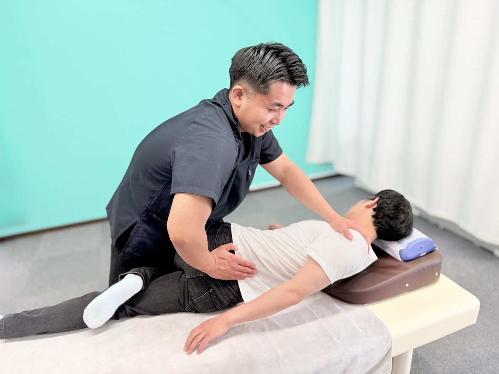

交通事故の症状別ケア
交通事故による腰の痛み
運転席・助手席で座った姿勢のまま強い衝撃を受けると、腰には想像以上の負担がかかります。事故後の腰痛は「腰椎捻挫（腰のねんざ）」と呼ばれ、むちうちに次いで多い交通事故のケガです。放置すると足のしびれや慢性腰痛につながることもあるため、早めのケアが肝心です。
自賠責で窓口0円
交通事故は夜20時まで受付
祝日も通常営業
運転席・助手席で座った姿勢のまま強い衝撃を受けると、腰には想像以上の負担がかかります。事故後の腰痛は「腰椎捻挫（腰のねんざ）」と呼ばれ、むちうちに次いで多い交通事故のケガです。放置すると足のしびれや慢性腰痛につながることもあるため、早めのケアが肝心です。
ひとつでも当てはまったら、我慢せずにご相談ください。
シートに座った状態の腰は、衝突の衝撃を逃がす余裕がありません。上半身の重さとシートベルトの固定力に挟まれ、腰椎（腰の骨）とその周囲の組織へ強い力が集中します。
衝突の衝撃で腰の関節や筋肉・靭帯が急激に引き伸ばされて起こる、いわば「腰のねんざ」。ぎっくり腰に似た鋭い痛みから、鈍い重だるさまで症状はさまざまで、レントゲンには写らないことがほとんどです。
衝撃を受けた瞬間、体は無意識に身構えます。左右非対称な力がかかることで骨盤や背骨のバランスが崩れ、事故から時間がたってから腰痛・姿勢の悪化として現れることがあります。
腰は下半身へ向かう神経の出発点。損傷部の炎症や筋肉の緊張が神経を刺激すると、お尻や足のしびれ・力の入りにくさが出ることがあります。悪化させると坐骨神経痛のような状態が長引くことも。
痛む腰をかばって動くうちに、股関節や背中など別の場所へ負担が広がります。「腰痛→かばう→他も痛む→さらに動けない」という悪循環に入る前に、早めに断ち切ることが大切です。

手足に力が入らない、しびれや痛みがどんどん強くなる、意識のもうろうとした感じや強い息苦しさがある——そのような場合は、まず病院・整形外科での検査を受けてください。検査先にお困りの場合は当院から提携医療機関への紹介状を作成できます。病院との併用通院も可能です。
事故後の腰痛は、痛む場所や出方によって原因が異なります。腰の中心が痛むなら腰椎や靭帯、腰の横〜お尻なら骨盤まわりの筋肉、足へ広がるしびれを伴うなら神経への刺激が疑われます。当院では痛む場所だけでなく、骨盤・股関節・背骨まで含めて検査し、根本の原因にアプローチします。
デスクワークや運転が多い方は、事故によるダメージにもともとの腰への負担が重なって長引きやすい傾向があります。お仕事の内容まで伺ったうえで、生活に合わせたケア計画をご提案します。
国家資格を持つ柔道整復師が、回復の段階に合わせて4つのステップで進めます。

事故の状況と痛みの出方を丁寧にお伺いし、腰の可動域・圧痛点・神経症状（しびれ・筋力低下）の有無を検査。骨盤や背骨のバランスも含めて状態を把握します。

急性期はハイボルトや超音波で深部の炎症を抑え、痛みを早期に軽減させます。コルセットの使い方や、負担の少ない座り方・寝方など生活面のアドバイスも行います。

痛みが落ち着いたら、手技で腰まわりの筋肉をゆるめ、骨盤・背骨のバランスを整えます。腰だけを揉むのではなく、股関節や背中まで含めた調整で「動ける腰」を取り戻します。

再発予防の時期は、体幹を支えるインナーマッスルへのアプローチやセルフストレッチの指導まで実施。事故前より快適な腰を目指して仕上げます。
「事故に遭ったばかりで何をすればいいか分からない」という段階でもOK。保険会社への連絡の仕方など、最初の手順からご案内します。
事故の状況・お体の状態・お仕事やご家庭のご事情まで、時間をかけて丁寧にお伺いします。
痛む場所だけでなく全身のバランスを検査し、その日から状態に合わせた施術を始めます。
回復までの見通しと通院ペースを分かりやすくご説明。無理なく続けられる計画を一緒に立てます。
交通事故治療専門アドバイザーが保険会社とのやり取りをサポート。必要に応じて提携弁護士のご紹介も可能です。
費用・保険・慰謝料のことまで、何でもお答えします。
交通事故ではよくあるパターンです。事故直後は体が興奮状態にあり痛みを感じにくく、2〜3日後から腰の痛みが現れることが少なくありません。ただし受診が遅れるほど「事故によるケガ」だと証明しづらくなり、目安として事故から14日を超えると保険会社に認められにくくなると言われます。違和感の段階でも、まずは早めにご相談ください。
程度により個人差がありますが、軽めの場合で2〜4週間、症状が強い場合は3ヶ月以上かけてじっくりケアすることもあります。痛みが強い初期は週2〜3回、落ち着いてきたら週1回程度が一つの目安です。お仕事や家事のご都合に合わせ、無理のないペースをご提案します。
交通事故によるケガの施術は自賠責保険が適用されるため、被害者の方の窓口負担は原則0円です。費用の心配なく、必要なケアに専念していただけます。
当院独自の制度で、交通事故の施術を受けられた方へ通院状況に応じて最大2万円のお見舞金をお渡ししています。詳しい条件は来院時にご説明します。
はい、別のものです。慰謝料は保険会社から支払われる法的な賠償金で、通院日数などに応じて金額が決まります。お見舞金は当院が独自にお渡しするもので、慰謝料とは別に受け取れます。
通えます。医師の検査・経過観察を受けながら当院で施術を行う「併用通院」の方は多くいらっしゃいます。検査が必要な場合は提携医療機関への紹介状の作成にも対応しています。転院・併用の手続きもサポートしますのでご安心ください。
通院先を選ぶのは患者さんご自身の自由であり、保険会社が一方的に制限することはできません。対応にお困りの場合は当院の交通事故治療専門アドバイザーがサポートし、必要に応じて交通事故に強い提携弁護士もご紹介できます。一人で抱え込まずご相談ください。
休業損害として補償される場合があります。自賠責基準では原則1日あたり6,100円（収入により上限19,000円）が目安です。必要書類の準備などもご案内しますので、お気軽にお尋ねください。
受けられるケースが多くあります。ご自身の任意保険（人身傷害補償など）が使える場合や、過失割合によって自賠責が適用される場合があります。保険の状況を確認しながらご案内しますので、まずはご相談ください。
予約優先制です。LINEまたはお電話（0568-90-1841）でのご予約がスムーズです。交通事故によるケガの方は夜20時まで受付、祝日・連休も通常営業しています。
しびれの程度によります。軽いしびれは筋肉の緊張が原因のことも多く施術で軽減が期待できますが、力が入らない・しびれが強くなる場合は椎間板などの検査が必要です。当院では状態を確認のうえ、必要に応じて提携医療機関への紹介状を作成し、医師の検査と並行してケアを進めます。
認められるケースは多くあります。事故によって既存の腰痛が悪化した場合も施術の対象です。事故前との違い（痛みの強さ・場所・しびれの有無）を初回のカウンセリングで詳しくお伺いし、記録に残していくことが大切ですので、遠慮なくお話しください。
事故後の腰痛は「座る・立つ・歩く」という生活の基本動作すべてに影響します。我慢して仕事や家事を続けるうちに悪化し、回復が遠のいてしまう方が少なくありません。
BTG接骨院 小牧院では、自賠責保険で窓口0円・夜20時まで受付・お見舞金制度など、忙しい方でも通い続けられる環境を整えています。あなたの腰の状態に合わせた無理のないケア計画をご提案しますので、まずはお気軽にご相談ください。
気になる症状をタップすると、詳しいページをご覧いただけます。

交通事故による腰の痛みのことなら、BTG接骨院 小牧院へ。
LINE・お電話で、無料相談を受け付けています。